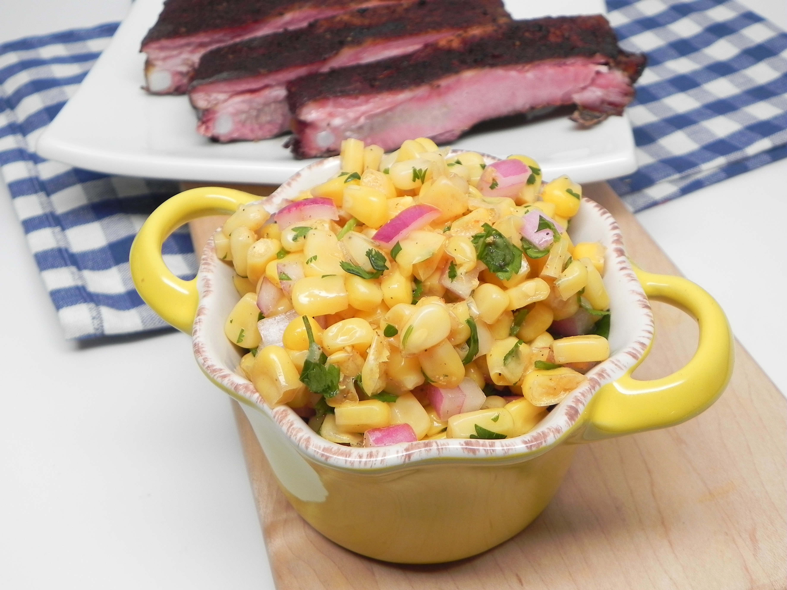

Chipotle Corn Salsa

Nutrition Facts
Per Serving: 124 calories; protein 4g; carbohydrates 28.9g; fat 1.4g; sodium 825mg.
Ingredients
- 2 (15.25 ounce) cans whole kernel corn, drained and rinsed
- ½ cup chopped red onion
- ¼ cup chopped fresh cilantro
- ½ medium lime, juiced
- 1 tablespoon chopped chipotle chile in adobo sauce
- 1 teaspoon salt
Steps
- Mix corn, onion, cilantro, lime juice, chipotle pepper, and salt together in a bowl.